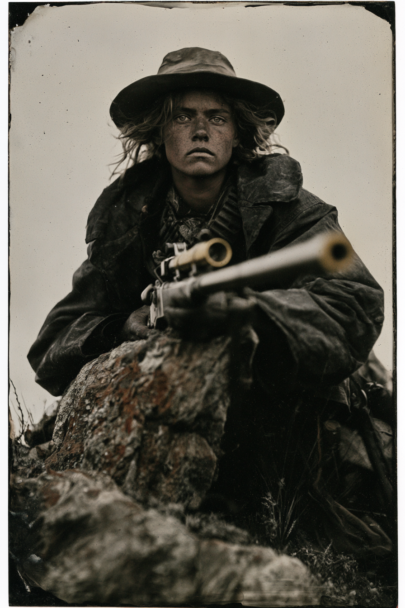

Archetyp: GUNSLINGER (Revolverheld)
Sie hat nie einen Mann näher als achtzig Meter getötet. Ihr Mundwerk arbeitet nach Kräften daran, das zu ändern.
| Agility | d8 | 2 |
| Smarts | d6 | 1 |
| Spirit | d4 | 0 |
| Strength | d6 | 1 |
| Vigor | d6 | 1 |
| Skill | Attr. | Die | Pts. |
|---|---|---|---|
| Shooting | Agi | d10 | 5 |
| Taunt | Sma | d8 | 4 |
| Notice | Sma | d6 | 1 |
| Stealth | Agi | d6 | 1 |
| Riding | Agi | d4 | 1 |
| Weapon | Range | Damage | AP | RoF | Wt. | Cost |
|---|---|---|---|---|---|---|
| Sharp's Big 50 „Der Alte" | 30/60/120 | 2W10 | 2 | 1 | 5,5 | $50 |
| 1 Schuss, Nachladen 3, Schnellschuss-Malus · Mindeststärke W8: –1, von Lieblingswaffe ausgeglichen | ||||||
| Colt Rainmaker (.32) | 12/24/48 | 2W6 | 1 | 1 | 1 | $8 |
| 6 Schuss, doppelt wirkend | ||||||
Trademark Weapon (Der Alte): +1 Schießen — hebt den –1 aus Mindeststärke W8 auf; +1 Parade, wenn angelegt
Gallows Humor: Furchtproben mit Taunt W8 statt Spirit W4, bei Steigerung +1 für alle
Hintergrund. Ihr Vater Anselm war ein preußischer Jäger, der nach ’48 floh und in Salina, Kansas, eine Büchsenmacherbank aufstellte; er brachte seiner Tochter Windabweichung und Erhöhung bei, bevor er ihr Englisch beibrachte. Mit elf schoss sie Antilopen für Eisenbahn-Trupps, mit neunzehn traf sie einen Hasen auf dreihundert Meter mit der riesigen Vorderlader-Sharps, die ihr Vater gebaut und nie abbezahlt hatte. Im Frühjahr ’83 kamen drei Männer der Bell-Ridge-Bande wegen eines bestimmten Gewehrs — und erschossen Anselm über seiner eigenen Werkbank. Billie folgte ihnen und tötete alle drei über zwei Tage von einer Anhöhe, die sie nie fanden.
Build. Geschicklichkeit W8, Verstand W6, Geist W4, Stärke W6, Konstitution W6 · Parade 2 (3 mit angelegter Sharps), Robustheit 5 Schießen W10, Spotten W8, Bemerken W6, Heimlichkeit W6, Reiten W4 Talente: Trademark Weapon (Lieblingswaffe — die Big 50 verlangt Stärke W8, sie hat W6; das Talent gleicht den −1 exakt aus), Gallows Humor (Galgenhumor — sie würfelt Spotten W8 statt ihres erbärmlichen Geist W4 auf Angstproben, bei einer Steigerung +1 Unterstützung für alle Verbündeten), Steady Hands Handicaps: Arrogant — Major · Thin Skinned — Minor · Vengeful — Minor Ausrüstung: Sharp’s Big 50 namens Der Alte (2W10, DB 2, Einzelschuss) mit Zielfernrohr, Colt Rainmaker .32 (viel zu wenig Waffe), Billig-Pferd namens Zwiebel, das beißt.
Das Arrogant-Handicap ist der Motor: es zerrt eine Scharfschützin ohne Duellant-Talent in das Mittagsritual gegen Leute, die es haben.
Aufhänger. Das Gewehr, wegen dem Bell Ridge kam, war kein Gewehr. Anselm verbrachte seine letzten zwei Winter damit, einen Lauf aus einem schwarzen, schwach warmen Metall zu bohren — Geisterstein — und sagte seiner Tochter nie, wofür. Im Ladenbuch steht unter dem Kunden nur ein Initial und eine Denver-Adresse, darunter in derselben Handschrift: „Gott vergib mir.“ Und Der Alte wurde auf derselben Bank aus demselben Stahl gebaut — Billie ist aufgefallen, dass er nachts ein bisschen genauer schießt.
Warum es Spaß macht. Die Hälfte der Sitzungen bist du chirurgisch: „Ich bin schon auf dem Grat“, und der Leutnant des Bösewichts verschwindet auf vierhundert Meter. Die andere Hälfte sieht der Tisch zu, wie du dich in einen Kampf hineinredest, für den du gebaut wurdest, ihn zu verlieren.
Regelgrundlage: Regelnotizen · Archetyp-Notizen